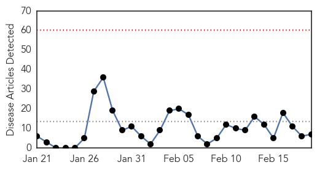
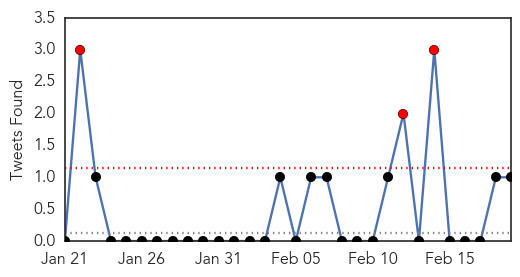
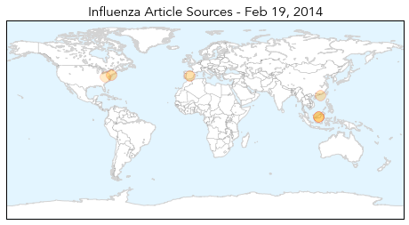
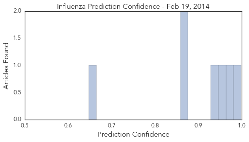

Dengue Fever
30-Day Web Trend
2 alerts, 6 warnings

30-Day Twitter Trend
0 alerts, 0 warnings

Article Locations

Article Confidences

Top Articles:
- 0.970
- Government going all-out against dengue menace - Nation
- 0.965
- Commissions sound warning
- 0.957
- Fiji government deploys extra resources to combat dengue
- 0.873
- Fiji nurses have holidays cancelled due to dengue
- 0.718
- Water crisis as drought dries up Malaysia
- 0.706
- FBC News
- 0.654
- Schools told to clean compounds
Top Tweets:
-
No tweets found for Feb 19, 2014
Influenza
30-Day Web Trend
0 alerts, 0 warnings

30-Day Twitter Trend
2 alerts, 0 warnings

Article Locations
Article Confidences
Top Articles:
- 0.999
- Aggressive strain of flu affecting young adults; so far two deaths reported in Lehigh Valley
- 0.972
- Research Shows New Flu Viruses Often Arise In Domestic Animals
- 0.957
- FAO rules out human-to-animal spread of influenza A(H7N9)
- 0.935
- FAO rules out human-to-animal transmission of influenza A(H7N9)
- 0.871
- China reports one H7N9 case, FAO says human illnesses aren't a threat to poultry
- 0.871
- New study challenges conventional wisdom on history of flu
- 0.648
- West Virginia asks feds to study health effects of chemical spill
Top Tweets:
- 0.509
- HIV virological suppression influences response to the AS03-adjuvanted monovalent pandemic influenza A H1N1 vaccin... http://t.co/2Xkn2TPgXW